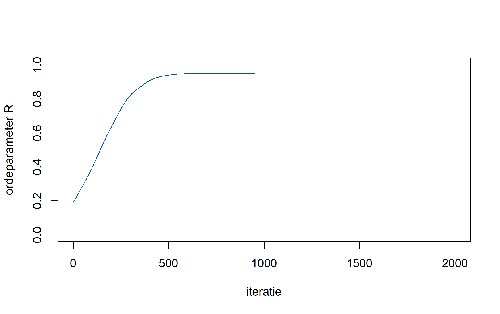

RTC beschrijft bewuste ervaring als een resonantietoestand van een gekoppeld oscillatorveld. De theorie is opgezet om doorrekenbaar te zijn: elke stap hieronder heeft een module in de suite.
Het uitgangspunt
Waarneming is niet ogenblikkelijk. Wat als één moment wordt ervaren, bestrijkt een interval van enkele tientallen milliseconden. RTC neemt dat interval, de perceptuele tijdsdrempel \tau, als vertrekpunt in plaats van als meetartefact.
Vier aannames
Het brein bevat een groot aantal oscillatoren met uiteenlopende eigenfrequenties.
Die oscillatoren zijn onderling gekoppeld met een sterkte K die kan variëren.
Bewuste toegang hangt samen met de mate van fasesynchronisatie, gemeten als ordeparameter R.
Aandacht werkt niet als extra signaal maar als regelaar van K.
De ordeparameter
In de mean-field vorm van het Kuramoto-model vat één complex getal de toestand van het hele veld samen:
z = \left\langle e^{i\theta_j} \right\rangle, \qquad R = |z|, \qquad \Psi = \arg(z)
\frac{d\theta_i}{dt} = \omega_i + K R \sin(\Psi - \theta_i)
kuramoto <-function(N =50, K =2.0, dt =0.01, steps =2000, sd_omega =0.5) {set.seed(42) omega <-rnorm(N, 0, sd_omega); theta <-runif(N, 0, 2* pi) R_hist <-numeric(steps)for (s inseq_len(steps)) { z <-mean(exp(1i * theta)); R <-Mod(z); Psi <-Arg(z) theta <- theta + dt * (omega + K * R *sin(Psi - theta)) R_hist[s] <- R } R_hist}plot(kuramoto(), type ="l", ylim =c(0, 1), col ="#00549c",xlab ="iteratie", ylab ="ordeparameter R")abline(h =0.6, lty =2, col ="#0099c8")

Figuur 1: Ordeparameter R(t) bij K = 2, N = 50 oscillatoren.
Wanneer K oploopt, blijft R eerst laag en ruisig en klapt daarna binnen korte tijd omhoog. Die scherpe knik is het kandidaat-mechanisme voor het aan-of-uit-karakter van bewuste toegang.
Van synchronisatie naar energie
Een veld dat over een venster \tau fase-informatie integreert, kan per tijdseenheid 1/\tau onafhankelijke toestanden onderscheiden. Neem aan dat dit in drie onafhankelijke richtingen gebeurt, en de mentale energie schaalt met de derde macht van die frequentie:
E_m = \frac{1}{\tau^3}
De exponent volgt dus uit de aanname over dimensionaliteit, niet uit een fit. Dat maakt hem toetsbaar: een gemeten helling die duidelijk van -3 afwijkt, weerlegt de aanname en niet alleen de parameter.
Wat er openstaat
De meetprocedure voor \tau is niet geijkt tussen laboratoria.
De eenheid van E_m is niet vastgelegd, waardoor alleen verhoudingen zinvol zijn.
De koppeling tussen R en gerapporteerde ervaring is correlationeel; het model geeft nog geen onafhankelijke voorspelling die de gangbare alternatieven uitsluit.
Die drie punten zijn de reden dat de rekenmodules op deze site openstaan. Wie de aannames wil testen, heeft de code nodig — niet alleen de conclusie.